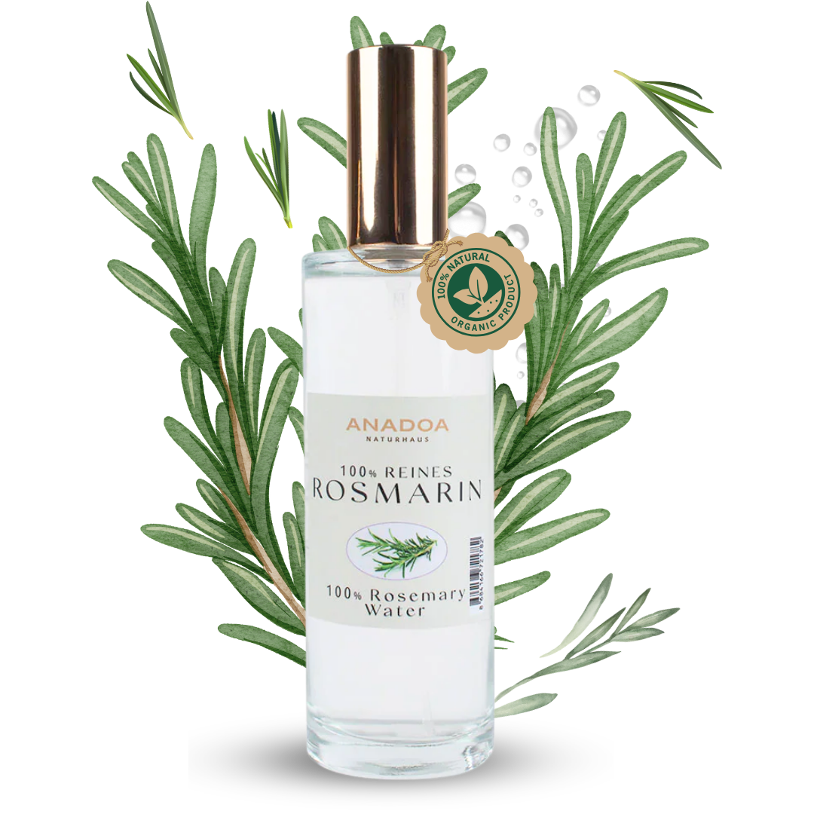

Der natürliche Wachstums-Booster für Ihr Haar. Belebt die Kopfhaut, fördert die Durchblutung und klärt das Hautbild – 100% naturrein.
Das Geheimnis dichter Haare.
Unser Rosmarinwasser (türkisch "Biberiye Suyu") wird aus wildem Rosmarin gewonnen, der auf den rauen, steinigen Hochlagen des Taurusgebirges (Toros Dağları) in Südanatolien wächst. Dort treffen mediterrane Sommersonne und kühle Bergwinde aufeinander – eine einzigartige Kombination, die dem Rosmarin eine außergewöhnlich hohe Wirkstoffdichte verleiht. Im Vergleich zu kultiviertem Feldrosmarin enthält wild wachsender Taurusrosmarin nachweislich höhere Konzentrationen an Carnosolsäure, Rosmarinsäure und ätherischen Ölen.
Rosmarinwasser ist kein bloßer Social-Media-Trend – es ist wissenschaftlich belegt: Eine klinische Studie (2015, Journal of Dermatology) konnte zeigen, dass Rosmarin-Extrakt in seiner Wirkung auf das Haarwachstum mit Minoxidil 2% vergleichbar ist, dem bekanntesten rezeptfreien Mittel gegen Haarausfall. Der Unterschied: unser Rosmarinwasser ist 100% natürlich, ohne hormonelle Eingriffe, ohne Nebenwirkungen und für den Langzeiteinsatz geeignet.
In der anatolischen und mediterranen Volksheilkunde wird Rosmarin (Biberiye) seit Jahrhunderten sowohl innerlich als Tee als auch äußerlich als Sud für Haar und Haut verwendet. Die Dampfdestillation konzentriert diese Wirkstoffe in einem reinen, wasserbasierenden Hydrolat: Micro-Tröpfchen des ätherischen Rosmarinöls bleiben in der Wasserphase suspendiert und entfalten ihre volle biologische Wirksamkeit direkt auf der Kopfhaut und den Haarfollikeln.
Viele Rosmarinsprays auf dem Markt sind stark verdünnte Extrakte oder alkoholische Tinkturen, die die Kopfhaut langfristig austrocknen und reizen können. Das Anadoa Rosmarinwasser ist ein unverdünntes, reines Destillat – ohne Alkohol, ohne synthetische Konservierungsstoffe und ohne Parfüm. Es kann täglich auf Kopfhaut und Gesicht angewendet werden, ohne die Haut zu belasten.
Stimuliert die Haarfollikel durch verbesserte Mikrozirkulation, versorgt die Wurzeln mit Sauerstoff und Nährstoffen – klinisch vergleichbar mit Minoxidil 2%, aber 100% natürlich.
Wirkt juckreizstillend und reguliert die Talgproduktion nachhaltig. Befreit die Kopfhaut von Schuppen und schafft ein sauberes, gesundes Milieu für optimales Haarwachstum.
Als Gesichtswasser klärt es unreine, fettige Haut, verfeinert die Poren und schützt die Haut dank Rosmarinsäure und Carnosol vor oxidativem Stress und vorzeitiger Hautalterung.
Hemmt auf natürliche Weise das Wachstum von Bakterien und Pilzen auf der Kopfhaut, bekämpft Aknebakterien im Gesicht und unterstützt die Abheilung entzündeter Stellen.
Täglich auf die trockene oder feuchte Kopfhaut sprühen und 2-3 Minuten mit den Fingerspitzen einmassieren. Nicht ausspülen. Der frische Duft verfliegt nach kurzer Zeit. Für beste Ergebnisse mindestens 3 Monate täglich anwenden.
Morgens und abends nach der Reinigung auf das Gesicht sprühen (Augenpartie aussparen) und einziehen lassen. Rosmarinwasser reguliert den Fettglanz, verfeinert die Poren und bereitet die Haut optimal auf weitere Pflegeprodukte vor.
Täglich auf den Bart und die darunter liegende Haut sprühen. Rosmarinwasser wirkt gegen Bartschuppen (Seborrhö), beruhigt juckende Haut unter dem Bart und fördert ein gleichmäßiges, dichtes Bartwachstum.
Nach dem Waschen als letzten Spülgang unverdünnt über das gesamte Haar gießen oder sprühen und nicht ausspülen. Dies schließt die Schuppenschicht des Haares und verleiht natürlichen, strahlenden Glanz ohne Silikone.
Ja. Eine klinische Studie aus dem Jahr 2015 (Skinmed Journal of Dermatology) zeigte, dass Rosmarin-Extrakt in seiner Wirkung auf das Haarwachstum mit Minoxidil 2% vergleichbar ist – dem bekanntesten rezeptfreien Mittel gegen Haarausfall. Der entscheidende Vorteil: Rosmarinwasser ist vollkommen natürlich, hat keine hormonellen Nebenwirkungen und ist sicher für die Daueranwendung.
Täglich direkt auf die Kopfhaut sprühen und 2-3 Minuten massieren. Nicht ausspülen. Der Schlüssel liegt in der Regelmäßigkeit – für sichtbare Ergebnisse empfehlen wir mindestens 3 Monate tägliche Anwendung. Es kann auf trockene oder feuchte Kopfhaut aufgetragen werden.
Unser Rosmarin (Biberiye) wächst wild auf den felsigen Hochlagen des Taurusgebirges (Toros Dağları) im Süden der Türkei. Das mediterrane Klima, der mineralreiche Kalksteinboden und die saubere Bergluft sorgen für eine außergewöhnlich hohe Konzentration an Wirkstoffen wie Carnosolsäure und Rosmarinsäure – deutlich höher als bei konventionell angebautem Rosmarin.
Ja, insbesondere bei diffusem Haarausfall und erblich bedingter androgenetischer Alopezie zeigt die regelmäßige Anwendung von Rosmarinwasser positive Wirkung: Es stärkt bestehende Follikel, verlangsamt den Haarausfall und kann neue Wachstumsphase anregen. Für beste Ergebnisse sollte es täglich angewendet und kombiniert mit einer ausgewogenen Ernährung eingesetzt werden.
Ja, Rosmarinwasser ist besonders wirksam bei fettiger Kopfhaut und Schuppen. Dank seiner adstringierenden Eigenschaften reguliert es die Talgproduktion, wirkt antimykotisch gegen schuppenverursachende Pilze und schafft eine saubere, ausgewogene Kopfhautumgebung für gesundes Haarwachstum.